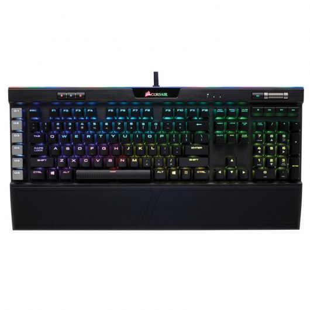
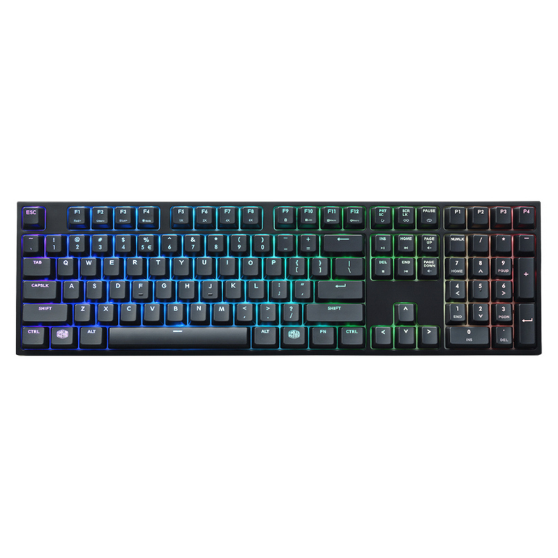
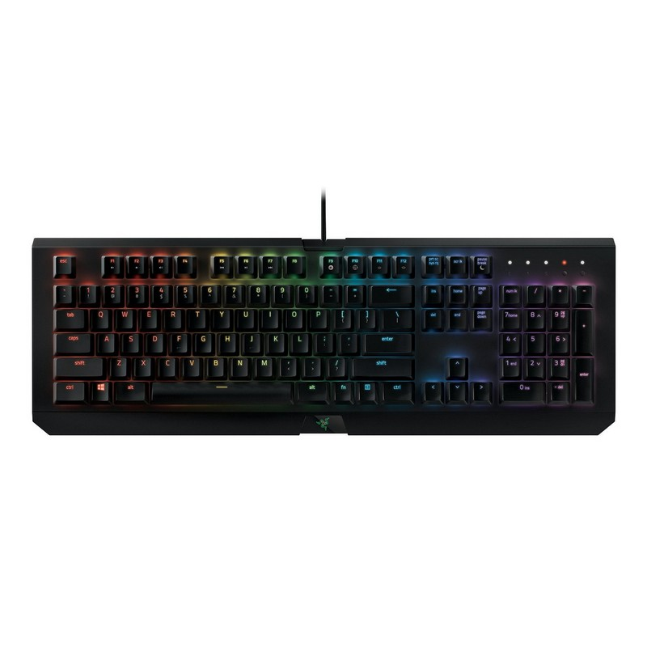

Corsair K95

×

CARACTERÍSTICAS
K95 PLATINUM lleva el rendimiento de Corsair a otro nivel. Desate un rendimiento irreal con los interruptores mecánicos CHERRY MX. Almacene y reproduzca macros complejas y efectos de iluminación con cualquier tecla. Abuse de un teclado que soportará toda una vida de uso.
- Defina los códigos de lanzamiento. Asigne macros de juego complejas a cualquiera de las 6 teclas especiales para macros. Tienen una textura especial que le permitirá encontrarlas fácilmente, además de un contorno que evitará que las pulse sin querer.
- Personalización a la velocidad de la luz. K95 PLATINUM lleva los mejores teclados CORSAIR a otro nivel de personalización. Nuestro famoso diseño de aluminio aeronáutico ahora incluye la tecnología LightEdge para que pueda iluminar el control de misión en un RGB espectacular.
- Llévelo a todas partes. K95 PLATINUM es estupendo para llevarlo de viaje. Lleve sus perfiles CUE a cualquier parte gracias al almacenamiento integrado de 8 MB. Tendrá más tiempo que dedicar al juego y pasará menos tiempo preparándose para la partida.
- Estructura de aluminio cepillado anodizado de calidad aeroespacial. Diseñado para soportar toda una vida de juego. Gran durabilidad en un cuerpo ligero, lo ideal para un teclado que va a ser partícipe de grandes acciones.
- 8 MB de almacenamiento interno. Permite el acceso hasta a tres perfiles almacenados sobre la marcha, sin necesidad de software externo.
- Retroiluminación dinámica multicolor con LightEdge. Consiga efectos de iluminación vivos y dinámicos con una personalización casi ilimitada.
- Interruptores mecánicos 100% CHERRY MX RGB. Libere una velocidad fluida con la resistencia de los interruptores de tecla mecánicos Cherry MX de contacto dorado.
- Protección contra pulsaciones nulas con detección simultánea de teclas. Asegúrese de que todos los comandos y pulsaciones simultáneas se registran con exactitud
- Reposamuñecas de tacto suave, de doble cara y desmontable. La comodidad necesaria para mejorar para su estilo de juego durante las sesiones maratonianas. Elija entre dos superficies para conseguir la mayor comodidad.
Especificaciones:
- Peso: 1.324kg
- Interruptores de teclas: Cherry® MX RGB Brown
- Retroiluminación del teclado: RGB
- Dimensión: 465 mm x 171 mm x 36 mm
- Teclas de macros: 6 teclas G dedicadas
- Índice de informes: Hasta 1 ms
- Matriz: 100% anti-ghosting con rollover de llave completa en USB
- Tamaño de teclado: Extendido
- Memoria interna: Sí
- Teclas multimedia: Seis teclas multimedia dedicadas, incl. Rodillo ascendente / descendente de volumen
- Reposamuñecas: De cuerpo entero, desmontable, de doble cara con acabado tacto suave
- Software CUE: Habilitado
- Tipo de cable: Fibra trenzada
- Bloqueo WIN: Sí
- Compatibilidad y requisitos del sistema:
- PC con 2 puertos USB 2.0
- Windows 10, Windows 8, Windows 7 o Windows Vista
- Se requiere una conexión a Internet para descargar el software Corsair Utility Engine
- Contenido del embalaje:
- Teclado mecánico para juegos K95 RGB PLATINUM
- Reposa muñecas extraíble integral
- Guía de inicio rápido
Cooler Master MasterKeys

×

CARACTERÍSTICAS
Eleve su juego con la línea de teclados para juegos MasterKeys y concéntrese en lo que realmente importa: un rendimiento sensato en un paquete sencillo. Aproveche al máximo sus habilidades y no se distraiga con las luces brillantes y los logotipos que parpadean. Elija precisión, precisión y rendimiento como los profesionales.
- El software Cooler Master es simple, directo. Podrá asignar uno de los 16,7 millones de colores a cada tecla en el MasterKeys Pro, ajustar los colores y elegir sus animaciones con claridad de cristal. No se requieren trucos o implementaciones dolorosas.
- Cuando tu carril está en juego, MasterKeys está allí para luchar contigo, no contra ti. El exclusivo sistema On-the-Fly te brinda la ventaja cuando más importa. No es necesario preocuparse por el software propietario. Ajuste todas sus preferencias directamente en su teclado. Configure perfiles, cambie de perfil, grabe macros y más con solo unas pocas teclas.
- Todos los demás teclados para juegos son prácticamente iguales. Lo sabemos. Entonces, es por eso que trabajamos en todo bajo el capó. Aproveche al máximo sus habilidades y no se distraiga con las luces brillantes y los logotipos que parpadean. La carcasa duradera y el diseño elegante de este tablero son para aquellos que quieren ser pro, no para aquellos que quieren verse profesionales.
- Seamos realistas: los LED como los conocemos son en gran medida una novedad en un teclado de juegos serio. Los LED tienen un gran potencial como útiles utilidades de juego, pero si el sistema de iluminación no está diseñado para ayudarte a superar a tus oponentes, solo son buenos para impresionar a los jugadores de la consola. El MasterKeys Pro toma la novedad de los LED RGB y encuentra un uso para ellos. Descargue las plantillas de iluminación generadas por los profesionales y obtenga los diseños más eficientes, maximice los DPS, APM y cualquier otro acrónimo de tres letras que lo ayude a ganar a sus rivales.
- Sin demora. El MasterKeys Pro está equipado con un procesador ARM Cortex de 32 bits para un rendimiento y precisión inigualables. Registra las teclas al instante. Guarde y ejecute comandos y macros en un instante. Gracias al sistema MasterKeys On-the-fly, vencerás a tu oponente al golpe cada vez.
- ¿Buscas dominar a tus camaradas en un juego nuevo? Ilumine todas sus claves relevantes y esquemas de control para un impulso instantáneo en la competencia. Además, con cuatro teclas de perfil, graba macros y cambia entre numerosas combinaciones de teclas con una simple pulsación de tecla. Gracias a nuestro teclado intuitivo, la programación de macros con múltiples teclas y la retroiluminación de la tecla de conmutación es muy fácil.
- La Serie MasterKeys emplea una combinación exclusiva de tecnologías de transferencia para la tecnología anti-efecto fantasma más eficiente y precisa hasta la fecha. Garantizar que cada pulsación de tecla se detecta correctamente, sin importar cuántas se presionen. Descanse tranquilo sabiendo que no importa cuán rápido y furioso se vuelva, su teclado puede manejarlo.
- Ya sea que te guste jugar en una configuración completa, prefieras un teclado de juego al 90% o necesitas una configuración móvil con un teclado sin teclas, tienes un teclado MasterKeys Pro para ti.
Especificaciones:
- Teclado con switches mecánicos
- Iluminación LED RGB
- Sistema On-the-Fly
- Procesador ARM Cortex de 32 bits
- Tasa de respuesta: 1ms
- Tipo de interruptor: CHERRY MX
- Material: Plástico / Metal
- Color: Negro
- Color del LED: RGB
- Tasa de sondeo: 1000 Hz
- Tasa de repetición: 1x / 2x / 4x / 8x
- Tasa de respuesta: 1ms
- MCU: 32bit ARM Cortex M3
- Memoria incorporada: 512 KB
- On-the-fly system: Grabación e iluminación macro
- Cable manager: 3 formas, surcos de gestión de cables de 180 grados
- Cable: Desmontable con Micro-USB
- Software AP: Sí, admite el software GUI
- Conector de cable: USB 2.0
- Longitud del cable: 1.5 metros
- Dimensiones: 439.23 x 130.32 x 41.95 mm
- Peso del producto (sin cable): 1090 g
Razer Blackwidow X

×

CARACTERÍSTICAS
Razer presenta su teclado Razer Blackwidow X Chroma con contactos mecánicos y retroliuminado.
- Diseñados para durar: Los interruptores mecánicos de Razer han demostrado en repetidas ocasiones que son los más adecuados para el juego, ya que ofrecen un rendimiento excelente y una durabilidad fiable sin excepciones. La tecnología y el diseño propios de Razer siguen un proceso de fabricación interno de principio a fin que permite garantizar que todos los interruptores producidos cumplan los requisitos más estrictos y, de esta forma, conseguir que las teclas alcancen una vida útil de hasta 80 millones de pulsaciones.
- Retroiluminación Chroma con 16,8 millones de opciones de color personalizables: El Razer BlackWidow X Chroma incluye teclas con retroiluminación programable individualmente con 16,8 opciones de color que pueden configurarse fácilmente a través de Razer Synapse. Podrás mejorar tu experiencia de juego de forma sencilla y única: desde efectos de iluminación predeterminados para diferentes tipos de juegos hasta tu propia paleta de colores personalizada y programada de forma exclusiva.
Especificaciones:
- Interruptores mecánicos de Razer™ con una fuerza de accionamiento de 50 g
- Vida útil de 80 millones de pulsaciones
- Retroiluminación Chroma personalizable con 16,8 millones de opciones de color
- Estructura superior de metal de uso militar
- Compatible con Razer Synapse
- Reconocimiento multitáctil de hasta 10 teclas simultáneamente
- Teclas totalmente programables con grabación simultánea de macros
- Opción de modo de juego
- Gestión del trazado de cables
- Tecnología Ultrapolling de 1.000 Hz
- Cable de fibra trenzada
- Requisitos del sistema:
- PC o Mac con un puerto USB libre
- Windows® 10 / Windows® 8 / Windows® 7 / Mac OS X (v10.8 - 10.11)
- Conexión a Internet
- 100 MB de espacio en disco duro
- Es necesario registrarse en Razer Synapse (requiere un correo electrónico válido), descargar el software, aceptar la licencia y tener una conexión a Internet para activar todas las funciones del producto y para las actualizaciones de software. Después de la activación, todas las funciones estarán disponibles en modo opcional sin Internet.